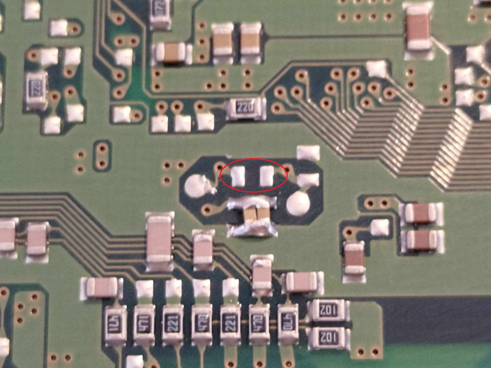
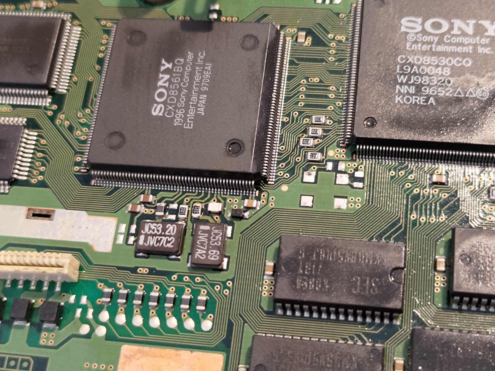

The early PU8 revision of the OG Playstation has a different GPU, which does not have separate clock inputs like later revision boards.
is required for the early PU8 revision boards. The boards come from the factory with either an NTSC or PAL oscillator installed depending on the region, along with
the supporting components. This guide is assuming you have a PAL board. If you have an NTSC board and you're chasing the PAL SMD XTAL, I have these on hand. Feel free to contact me.
The supporting components are an RF choke on the oscillator's power pin line (not absolutely required, you could bridge this, or use the zero ohm resistor link), a 220r or 760r resistor on the clock output pin
(don't ask me why these differ board to board), and finally the bypass capacitors (2 * 0.1uf/ 100nf ceramic capacitors). You could probably get away without using the bypass caps,
too. I'd definitely recommend you do install them, though.
The 2 clock input pins are tied together from the factory, on these boards, you simply remove the zero ohm resistor link circled in red (already removed in the image below) and
you're free to feed the clock inputs independently of each other, one the PAL GPU frequency, the other the NTSC GPU frequency.

There are 2 blank 0805 footprints for the capacitors. I had 0603 on hand, and installed them instead (quite lazily), hence it looks ...uhh , a little funny.
On the top side of the board, you can see the completed installation. Because this system uses an Xstation ODE, and the ODE provides the CPU clock, I was able to simply transplant
the RF choke and output resistor across from the unused CPU clock.

The only sucky part about this mod? Good luck finding the NTSC SMD xtal oscillators. I have an ample supply of JP PU18 systems to take these off, as those will be getting actual
DFO board installations in the future. An alternate solution is to use the large 5v oscillators. These work fine at ~3.3v, you could mount them upside down and run wires to the
footprint pads as the PU8 systems (unlike all future models) have a stack of room under the top plate.